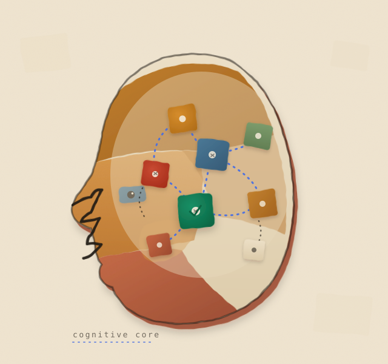
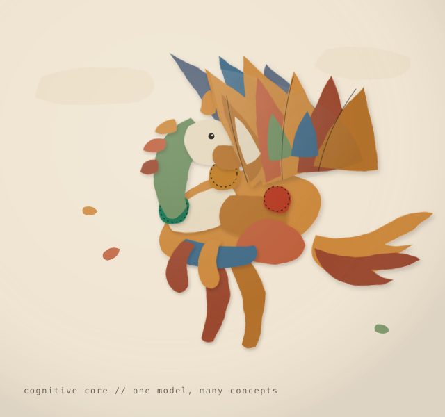
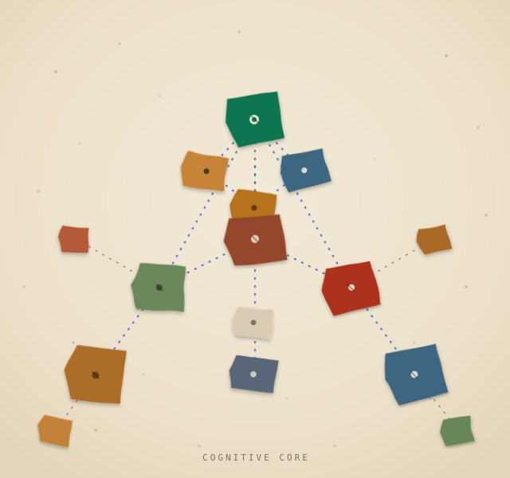
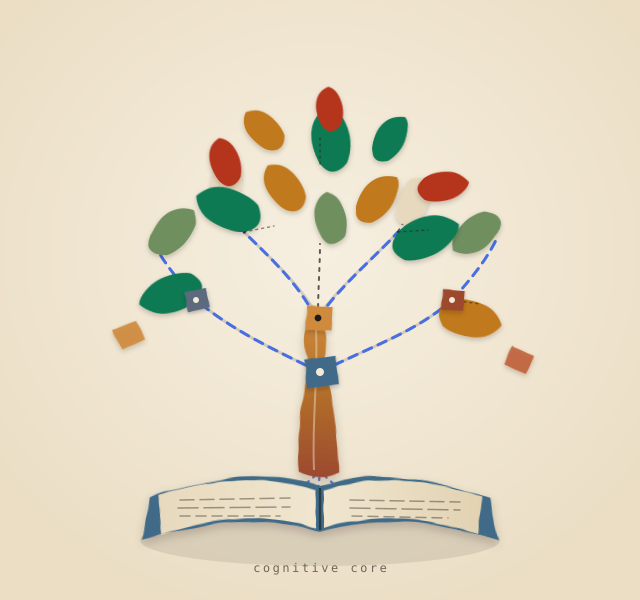

4 light-mode directions on the cream hero panel · pick one

The Cognitive MindA three-quarter human head profile is torn from layered painted-paper tiles (kraft, ochre, terracotta, parchment) set on a transparent cream

Pegasus AscendingA soaring winged horse is assembled from roughly thirty distinct painted-paper patches: the body, neck, legs and head are warm collage swatc

Constellation AtlasAn editorial star-map: torn-paper concept-node tiles scattered across a light cream field, stitched together with royal-blue dashed thread i

Knowledge Tree (Reading Room hero)An asymmetric painted-paper collage: an open parchment book at the base roots a trunk built from torn kraft/terracotta paper, whose branches